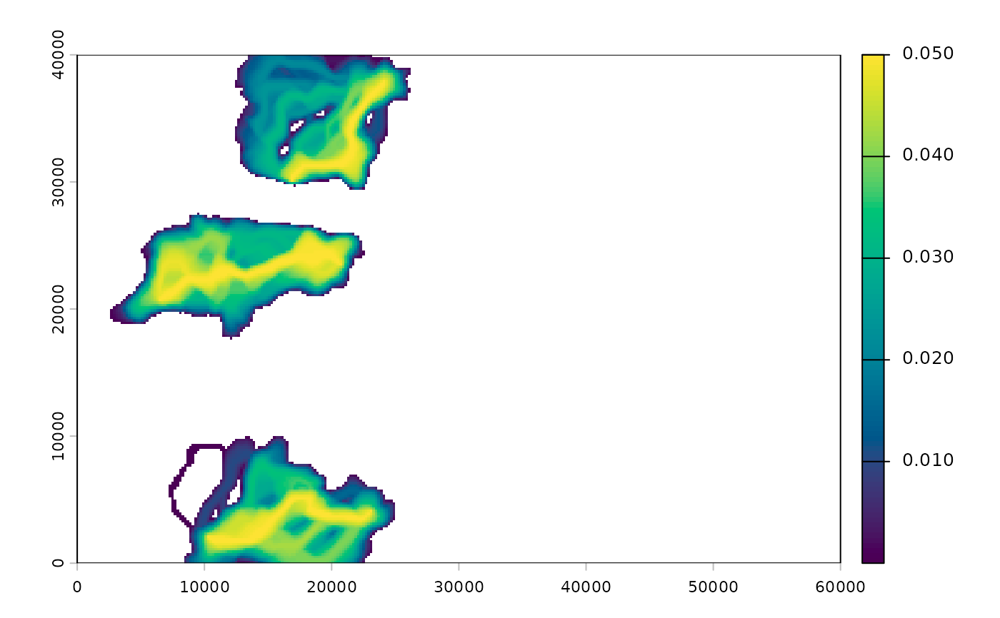

Spreads one value per pair of sites (a predicted FST, a projected change in
dM, and so on) over the pair's least cost corridor, scaled by the corridor
weight so that less likely routes count for less, and averages overlapping
corridors cell by cell. With direction = TRUE, each directed pair also
contributes a vector from source to destination, reversed when its value is
negative, and the vectors are summed in every cell to give the net
direction of change, as in Fig. 1D of Maier et al. (2022).
Usage
map_pairwise(
values,
acc,
sites,
id = "site",
q = 0.05,
direction = TRUE,
vectors = c("value", "sign"),
absolute = TRUE,
progress = interactive()
)Arguments
- values
A data.frame with columns
from,toandvalue. For directional maps include both directions of each pair.- acc
Accumulated cost surfaces from
accumulated_cost().- sites
An
sfobject of sites (used for the direction of each pair).- id
Name of the ID column in
sites.- q
Corridor threshold passed to
lcc_weights().- direction
Also compute the net direction of change.
- vectors
How each pair contributes to the direction.
"value"(the default) adds a unit vector from source to destination scaled by the pair's value, so pairs with larger changes pull harder."sign"adds the source-to-destination displacement scaled only by the sign of the value, as in Maier et al. (2022).- absolute
Map the absolute value (the magnitude of change), as for change maps. Set to
FALSEto map signed values.- progress
Show a progress bar.
Value
A SpatRaster with layer value (mean weighted value per cell) and,
with direction = TRUE, vx and vy (mean direction vector, map units)
and bearing (degrees clockwise from north).
Examples
# \donttest{
ex <- corridor_example(acc = TRUE)
# a made-up change for a few pairs: more net movement toward the east
v <- both_directions(data.frame(from = c("M03", "M08", "M14"), to = c("M20", "M25", "M28")))
east <- sf::st_coordinates(ex$sites)[match(v$to, ex$sites$site), 1] >
sf::st_coordinates(ex$sites)[match(v$from, ex$sites$site), 1]
v$value <- ifelse(east, 0.05, -0.05)
m <- map_pairwise(v, ex$acc, ex$sites)
terra::plot(m$value, col = hcl.colors(100, "viridis"))

# }